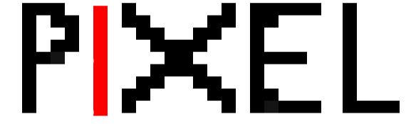

Pixels are the basic units of any image.Pixel Art is basically drawing out an image with jagged edges more like an image zoomed in to a great extent.This gives it a distinct unique feel .
Changelog :
Ver 1.1 [current] is a slight improvement of the previous version with support for more colors and better ui
Here is an example of one of the images drawn out using this application.